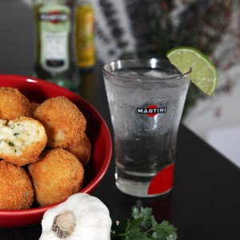

Arancini aux crevettes

Bonjour tout le monde. A force de me voir poster mes petites boulettes de riz fourrées à la mozzarella un peu partout (mes fameuses arancini) vous aurez compris que j’en suis totalement dingue et c’est pourquoi aujourd’hui je vous propose une nouvelle recette et cette fois-ci ce sera des arancini aux crevettes.
Photo ©Cuisine moi un mouton
C’est un peu compliqué pour moi de vous donner toutes mes recettes d’arancini car il faut faire les photos et ça refroidit super vite, alors dur dur de laisser la mozzarella redurcir à l’intérieur de mes boulettes de riz (vous avez une autre recette ici pour ceux que ça intéresse). Pour cette nouvelle recette, je n’avais pas vraiment le choix car il s’agit de ma recette d’aperitivo que j’ai proposé à Martini pour accompagner un de leurs cocktails et je me suis vraiment éclaté à faire ces photos (même si ce fut difficile de résister à la tentation). Pour rappel, l’apéritivo c’est cette petite habitude qu’ont les Italiens (comme les Espagnols d’ailleurs) de se retrouver sur les coups de 18h pour entre autres bavarder oui mais surtout pour partager un moment convivial autour d’une ou plusieurs petites bouchées (tapas) accompagnées d’une boisson alcoolisée (ou non). Ces arancini aux crevettes sont ma deuxième recette dédiée à l’aperitivo et je suis trop heureuse de vous la présenter car nous nous sommes vraiment régalés (vous pouvez retrouver ma première recette ICI).
Voyons voyons… Vous aimez le risotto? Imaginez-le parfumé au persil et à l’ail, un peu de vin blanc, du parmesan et quelques petites crevettes. Vous comprenez maintenant pourquoi nous nous sommes régalés?
Ces arancini aux crevettes sont comme vous l’avez compris inspiré (car j’ai dû l’adapter pour faire ces boulettes de riz) de ma recette de risotto bien à moi que j’ai longtemps testé, réajusté, réinventé, bref maintenant c’est ma recette que j’utilise à chaque fois et cette fois encore elle ne m’a pas déçue! Le petit plus (mais qui est totalement facultatif) c’est que dans les arancini je rajoute à chaque fois un petit morceau de mozzeralla ce qui fait que quand on ouvre notre boulette de riz le fromage dégouline ce qui ajoute beaucoup de gourmandises vous vous en doutez!
Je vous laisse à présent avec la recette 🙂
NB : Comme pour la première recette d’aperitivo vous trouverez ici mes photos mais aussi la photo des arancini accompagnées du cocktail Martini prise par le photographe de Martini: Olivier Hellard.
Photo ©Cuisine moi un mouton
Photo ©Cuisine moi un mouton
Photo ©Cuisine moi un mouton
Photo ©Cuisine moi un mouton
Photo ©Cuisine moi un mouton
Ingrédients
- Huile d'olive
- Persil - 1 bouquet
- Ail - 1 à 2 gousses selon vos goûts
- Petites crevettes décortiquées - 250g
- Oignon - 1 petit
- Riz (arborio de préférence) - 200g
- Eau - 500ml
- Bouillon de poule - 1
- Vin blanc - 100ml
- Parmesan - 100g
- Mozzarella - 125g
- Oeufs - 3
- Farine - compter environ 140g
- Chapelure - environ 150g
- Huile de friture
Instructions
- Dans une casserole, préparer votre bouillon
- Faire bouillir l'eau avec le cube de bouillon de poule
- Une fois que le bouillon est prêt. Réserver
- Dans un poêle, faire fondre l'ail écrasé avec de l'huile d'olive
- Ajouter les crevettes, mélanger, laissez mijoter 5 minutes
- Ajouter le persil est réserver
- Dans une grande poêle, faire revenir l'oignon émincé dan un peu d'huile d'olive
- Ajouter le riz et remuer jusqu'à ce qu'il soit translucide (environ 2 minutes)
- Verser le vin blanc
- Remuer jusqu'à ce que le vin soit totalement absorbé
- Verser le bouillon (pour un risotto on ajoutera le bouillon petit à petit mais pour cette recette vous pouvez l'ajouter en une ou deux fois)
- Couvrir à feu doux
- Laisser cuire pendant 18 minutes (varie selon le riz comptez entre 15 et 20 minutes)
- Sortir du feu et ajouter le mélange crevettes-ail-persil
- Mélanger et laisser le mélange hors du feu 5 minutes
- Transvaser le tout dans un plat et laisser refroidir
- Une fois que la préparation a bien refroidie, ajouter le parmesan
- Mélanger
- Couper la mozzarella en carrés
- Préparer un saladier rempli d'eau sur votre plan de travail pour faciliter la formation des boules
- Préparer 3 bols: 1 bol de farine ; 1 bol avec les œufs battus à la fourchette ; 1 bol de chapelure
- Humidifiez-vous les mains
- Former une boule dans vos mains en écrasant plus ou moins le riz (boules de taille moyenne 8-10 com de diamètre environ)
- Enfoncer un doigt jusqu'au milieu de la boule
- Ajouter un (ou deux^^) morceau de mozzarella à l’intérieur
- Pour couvrir le trou ajouter un peu de riz qui se trouve dans le plat, couvrez le trou et reformer une boule
- Tremper la boule dans la farine
- Puis dans l’œuf
- Puis dans la chapelure
- Posez-les sur une plaque pendant que vous faites les autres (n'oubliez pas de vous humidifier les mains entre chaque boulette pour plus de commodités)
- Verser de l'huile dans un grand faitout et faites la chauffer
- Plonger les arancini
- Sortez-les à l'aide d'un écumoire quand ils commencent à dorer
- Posez les sur du papier absorbant
- A déguster immédiatement
- Dans un verre rempli de glace, verser du martini Bianco Presser 1/4 de citron vert Allonger de tonic Déguster bien frais
- Dans un verre rempli de glace, verser du martini Bianco
- Presser 1/4 de citron vert
- Allonger de tonic
- Déguster bien frais



Les tips de la communauté
Arancini italiens très apprécié, rappelant voyages à Rome. Testeur valide le goût authentique. Bon pour apéritif en petites portions (2 par personne) ou repas complet avec salade. Environ 15 boulettes par recette.
Astuces
- Prévoir 2 arancini par personne pour apéritif, pluscomplet avec salade pour plat
- Utiliser en entrée lors de repas à thème italien
- Les crevettes apportent protéine de qualité